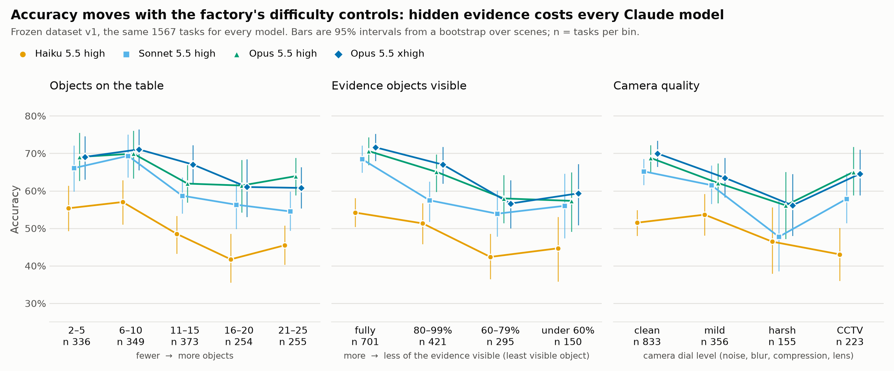
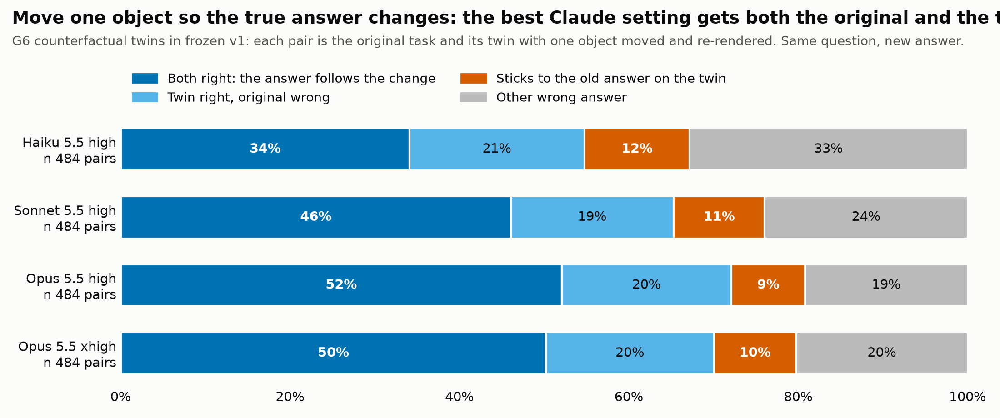

Dataset report: v1
What the Visual Task Factory built in this run, what it threw away and why, and how models did. Every number below is computed from the run folder by programs; no answer was typed by hand or taken from a model.
Report 0.1.0 · vtf 0.0.1 · scene spec 0.2.0 · tasks 0.2.0 · programs 0.2.2 · renderer blender 5.3.0 · run seed 1
Gate pass rates
Each candidate question must pass every gate to ship. G1 re-runs the program on the scene file; G2 recomputes the answer from rendered pixels; G3 checks the evidence is visible; G4 rejects near-ties; G5 balances answers so they cannot be guessed; G6 moves one object and requires the answer to change; G7 checks the task rebuilds identically. Rates are over the candidates that reached each gate.
Table view
| Gate | Reached | Passed | Pass rate |
|---|---|---|---|
| G1 Truth by execution | 3653 | 3653 | 100.0% |
| G2 Second computation | 3653 | 3486 | 95.4% |
| G3 Evidence visible | 3653 | 3633 | 99.5% |
| G4 No near-ties | 3653 | 3649 | 99.9% |
| G5 Vision necessity (balance) | 3959 | 3181 | 80.3% |
| G6 Counterfactual twin | 484 | 484 | 100.0% |
| G7 Determinism | 3653 | 3653 | 100.0% |
What the factory threw away
4352 rejections across 34 distinct reasons, every one logged in rejected.jsonl with its evidence. By stage: compile 3360, G5 778, G2 167, settle 36, G3 8, G4 3.
Coverage
Accepted tasks by question family, camera rig and difficulty level, so gaps are visible at a glance. Darker cells hold more tasks; a dot means none.
| camera | Total | |||
|---|---|---|---|---|
| Family | front | overhead | gripper | |
| count | 103 | 115 | 91 | 309 |
| count_attribute | 181 | 174 | 131 | 486 |
| nearest_to_gripper | 80 | 114 | 80 | 274 |
| distance | 144 | 132 | 21 | 297 |
| front_to_back | 160 | 120 | 54 | 334 |
| relation | 122 | 135 | 47 | 304 |
| support | 104 | 103 | 68 | 275 |
| containment | 91 | 88 | 53 | 232 |
| occlusion | 66 | 19 | 9 | 94 |
| reachability | 78 | 94 | 9 | 181 |
| free_space | 124 | 141 | 43 | 308 |
| gripper_view | · | · | 87 | 87 |
| front | overhead | gripper | Total | |||||||
|---|---|---|---|---|---|---|---|---|---|---|
| Family | low | medium | high | low | medium | high | low | medium | high | |
| count | 61 | 23 | 19 | 55 | 36 | 24 | 39 | 29 | 23 | 309 |
| count_attribute | 76 | 62 | 43 | 79 | 51 | 44 | 58 | 41 | 32 | 486 |
| nearest_to_gripper | 32 | 30 | 18 | 41 | 49 | 24 | 15 | 33 | 32 | 274 |
| distance | 54 | 49 | 41 | 49 | 53 | 30 | 6 | 5 | 10 | 297 |
| front_to_back | 69 | 53 | 38 | 41 | 49 | 30 | 14 | 19 | 21 | 334 |
| relation | 38 | 50 | 34 | 48 | 46 | 41 | 7 | 20 | 20 | 304 |
| support | 46 | 34 | 24 | 43 | 31 | 29 | 31 | 19 | 18 | 275 |
| containment | 40 | 29 | 22 | 35 | 31 | 22 | 27 | 16 | 10 | 232 |
| occlusion | 12 | 25 | 29 | 3 | 9 | 7 | · | 6 | 3 | 94 |
| reachability | 39 | 22 | 17 | 40 | 32 | 22 | 4 | · | 5 | 181 |
| free_space | 37 | 56 | 31 | 35 | 61 | 45 | 6 | 16 | 21 | 308 |
| gripper_view | · | · | · | · | · | · | 39 | 30 | 18 | 87 |
| front | overhead | gripper | Total | ||||||||||
|---|---|---|---|---|---|---|---|---|---|---|---|---|---|
| Family | clean | mild | harsh | cctv | clean | mild | harsh | cctv | clean | mild | harsh | cctv | |
| count | 67 | 17 | 5 | 14 | 51 | 31 | 9 | 24 | 55 | 11 | 8 | 17 | 309 |
| count_attribute | 96 | 39 | 16 | 30 | 77 | 46 | 23 | 28 | 79 | 23 | 13 | 16 | 486 |
| nearest_to_gripper | 42 | 15 | 10 | 13 | 51 | 27 | 15 | 21 | 46 | 18 | 8 | 8 | 274 |
| distance | 77 | 26 | 13 | 28 | 55 | 35 | 15 | 27 | 13 | 8 | · | · | 297 |
| front_to_back | 97 | 28 | 12 | 23 | 44 | 31 | 19 | 26 | 30 | 15 | 3 | 6 | 334 |
| relation | 71 | 24 | 10 | 17 | 55 | 38 | 20 | 22 | 24 | 14 | 5 | 4 | 304 |
| support | 56 | 17 | 10 | 21 | 45 | 29 | 12 | 17 | 31 | 20 | 6 | 11 | 275 |
| containment | 52 | 20 | 5 | 14 | 44 | 16 | 9 | 19 | 30 | 10 | 6 | 7 | 232 |
| occlusion | 39 | 11 | 7 | 9 | 13 | 3 | 1 | 2 | 7 | 1 | 1 | · | 94 |
| reachability | 34 | 23 | 11 | 10 | 49 | 22 | 10 | 13 | 3 | 2 | 4 | · | 181 |
| free_space | 56 | 31 | 16 | 21 | 63 | 30 | 18 | 30 | 27 | 12 | 1 | 3 | 308 |
| gripper_view | · | · | · | · | · | · | · | · | 44 | 30 | 3 | 10 | 87 |
Answer distributions
Share of each answer value within its family after G5 balancing. The dashed line is the cap: no single value may exceed it, so always giving the most common answer stays a weak strategy.
count
309 tasks · int answers · top value 35%
count_attribute
486 tasks · int answers · top value 35%
nearest_to_gripper
274 tasks · object answers · top value 11%
distance
297 tasks · number answers
front_to_back
334 tasks · object answers · top value 9%
relation
304 tasks · object answers · top value 4%
support
275 tasks · object answers · top value 35%
containment
232 tasks · set answers · top value 35%
occlusion
94 tasks · object answers · top value 18%
reachability
181 tasks · set answers · top value 14%
free_space
308 tasks · bool answers · top value 55%
gripper_view
87 tasks · object answers · top value 10%
Where the 2D shortcut fails
For spatial families, a 2D heuristic (nearest in the image, lowest in the frame, and so on) is computed from the scene file. A task is a conflict task when that heuristic gives the wrong answer, so a model that reads the picture flatly will miss it. 1495 spatial tasks are tagged.
Vision necessity (G5)
Can the answer be guessed without looking? The prior baseline always gives the family's most common answer; the blind baseline is claude-sonnet-5-5 answering the question with no image; the third marker is claude-sonnet-5-5 with the image. Whiskers are 95% bootstrap intervals.
Table view
| Family | Most common answer | Prior before balance | Prior | Blind | With image |
|---|---|---|---|---|---|
| count | 1 | 70% | 35% | 27% n=15 | 76% n=144 |
| count_attribute | 1 | 43% | 35% | 27% n=15 | 74% n=147 |
| nearest_to_gripper | jug | 11% | 11% | 0% n=15 | 47% n=144 |
| distance | 42.9 (median) | 13% | 13% | 7% n=15 | 27% n=119 |
| front_to_back | can | 9% | 9% | 27% n=15 | 86% n=145 |
| relation | can | 4% | 4% | 0% n=15 | 51% n=144 |
| support | table | 69% | 35% | 40% n=15 | 67% n=144 |
| containment | none | 45% | 35% | 0% n=15 | 60% n=144 |
| occlusion | can | 18% | 18% | 0% n=15 | 47% n=76 |
| reachability | none | 14% | 14% | 0% n=15 | 60% n=105 |
| free_space | no | 55% | 55% | 47% n=15 | 71% n=140 |
| gripper_view | bowl | 10% | 10% | 7% n=15 | 65% n=48 |
Balancing (seed 0) kept 3181 of 3959 validated tasks and moved 778 to the rejected log (stage G5, reason rebalance).
Counterfactual twins (G6)
For a twin, one evidence object is moved, the scene is re-rendered and the same program re-run; the answer must change and the twin must pass every gate. A model that really looks should get both the original and the twin right.
G6 passed on 484 of 484 attempted twins (100.0%). 484 accepted tasks have a twin; 484 twin pairs are both in the accepted set.
| Model | Twin pairs | Both right | Rate |
|---|---|---|---|
| claude-sonnet-5-5 | 119 | 47 | 39.5% |
Model accuracy
Accuracy with the image, scored by typed checkers against the program answers. Intervals are 95% percentile bootstrap. Unparseable replies count as wrong.
claude-sonnet-5-5: 61.9% overall (928/1500, 95% CI 59.5% to 64.3%, 61 unparseable)
Spatial families split by whether the 2D shortcut agrees with the 3D truth. A large gap means the model leans on the shortcut.
Table view: by family, rig and shortcut conflict
| Split | n | Correct | Accuracy | 95% CI |
|---|---|---|---|---|
| family: containment | 144 | 86 | 59.7% | 51% to 67% |
| family: count | 144 | 109 | 75.7% | 69% to 83% |
| family: count_attribute | 147 | 109 | 74.2% | 67% to 81% |
| family: distance | 119 | 32 | 26.9% | 19% to 35% |
| family: free_space | 140 | 100 | 71.4% | 64% to 79% |
| family: front_to_back | 145 | 125 | 86.2% | 81% to 92% |
| family: gripper_view | 48 | 31 | 64.6% | 50% to 77% |
| family: nearest_to_gripper | 144 | 68 | 47.2% | 40% to 56% |
| family: occlusion | 76 | 36 | 47.4% | 37% to 58% |
| family: reachability | 105 | 63 | 60.0% | 50% to 70% |
| family: relation | 144 | 73 | 50.7% | 42% to 58% |
| family: support | 144 | 96 | 66.7% | 59% to 74% |
| rig: front | 531 | 345 | 65.0% | 61% to 69% |
| rig: gripper | 466 | 310 | 66.5% | 62% to 71% |
| rig: overhead | 503 | 273 | 54.3% | 50% to 59% |
| shortcut conflict: false | 541 | 369 | 68.2% | 64% to 72% |
| shortcut conflict: n/a | 746 | 463 | 62.1% | 59% to 66% |
| shortcut conflict: true | 213 | 96 | 45.1% | 38% to 52% |
| family x conflict: containment|n/a | 144 | 86 | 59.7% | 51% to 67% |
| family x conflict: count_attribute|n/a | 147 | 109 | 74.2% | 67% to 81% |
| family x conflict: count|n/a | 144 | 109 | 75.7% | 69% to 83% |
| family x conflict: distance|n/a | 119 | 32 | 26.9% | 19% to 35% |
| family x conflict: free_space|false | 98 | 79 | 80.6% | 72% to 88% |
| family x conflict: free_space|true | 42 | 21 | 50.0% | 36% to 64% |
| family x conflict: front_to_back|false | 105 | 98 | 93.3% | 89% to 97% |
| family x conflict: front_to_back|true | 40 | 27 | 67.5% | 52% to 82% |
| family x conflict: gripper_view|n/a | 48 | 31 | 64.6% | 50% to 77% |
| family x conflict: nearest_to_gripper|false | 105 | 62 | 59.1% | 50% to 69% |
| family x conflict: nearest_to_gripper|true | 39 | 6 | 15.4% | 5% to 28% |
| family x conflict: occlusion|false | 64 | 30 | 46.9% | 34% to 59% |
| family x conflict: occlusion|true | 12 | 6 | 50.0% | 25% to 75% |
| family x conflict: reachability|false | 97 | 61 | 62.9% | 54% to 73% |
| family x conflict: reachability|true | 8 | 2 | 25.0% | 0% to 62% |
| family x conflict: relation|false | 72 | 39 | 54.2% | 42% to 65% |
| family x conflict: relation|true | 72 | 34 | 47.2% | 36% to 58% |
| family x conflict: support|n/a | 144 | 96 | 66.7% | 59% to 74% |
Findings: do Claude models take the 2D shortcut?
Every model answered the same 1567 tasks (792 spatial ones carry the shortcut flag) through the Anthropic API with only the image and the question. Intervals are 95%, from a bootstrap that resamples whole scenes (261 scenes). Full write-up: findings.md.
- Haiku 5.5 at effort high: 55% when the 2D shortcut agrees with the 3D truth, 30% when it conflicts; gap 25 points (95% CI 18 to 32).
- Sonnet 5.5 at effort high: 68% when the 2D shortcut agrees with the 3D truth, 44% when it conflicts; gap 24 points (95% CI 17 to 32).
- Opus 5.5 at effort high: 72% when the 2D shortcut agrees with the 3D truth, 46% when it conflicts; gap 26 points (95% CI 18 to 33).
- Opus 5.5 at effort xhigh: 74% when the 2D shortcut agrees with the 3D truth, 48% when it conflicts; gap 26 points (95% CI 19 to 33).
- Shortcut capture: of the conflict tasks each model got wrong, the share answered with exactly the 2D-shortcut answer, against chance: Haiku 5.5 high 44% vs 46% (0.95x, 95% CI 0.79 to 1.12); Sonnet 5.5 high 64% vs 46% (1.39x, 95% CI 1.18 to 1.67); Opus 5.5 high 67% vs 49% (1.36x, 95% CI 1.12 to 1.67); Opus 5.5 xhigh 68% vs 46% (1.48x, 95% CI 1.21 to 1.84).
- The pull is strongest for 'nearest to the gripper', where wrong answers name the object nearest in the image: Haiku 5.5 high 12 of 38 (chance 21%); Sonnet 5.5 high 22 of 32 (chance 19%); Opus 5.5 high 23 of 31 (chance 17%); Opus 5.5 xhigh 22 of 27 (chance 17%). Other object families, all models pooled: relation 28 of 134 (chance 24%); occlusion 7 of 32 (chance 36%); reachability 20 of 30 (chance 10%).
- Confound check: the gap survives for every model. Within the same family and camera, conflict tasks score lower by (points): Haiku 5.5 high -26, Sonnet 5.5 high -25, Opus 5.5 high -28, Opus 5.5 xhigh -28; the logistic regression holding visible fraction, G4 margin, object count, camera quality and family fixed gives conflict odds ratios of Haiku 5.5 high 0.275 (0.188 to 0.403), Sonnet 5.5 high 0.289 (0.197 to 0.424), Opus 5.5 high 0.244 (0.163 to 0.366), Opus 5.5 xhigh 0.221 (0.15 to 0.326).
- More thinking (Opus 5.5 xhigh vs high): the gap changes by +0 points (95% CI -5 to +5); accuracy on conflict tasks by +2 points (95% CI -3 to +7).
| Model · effort | Overall | Shortcut agrees | Shortcut conflicts | Gap (points) | Matched gap, same family and camera | Odds ratio for conflict, with covariates | Shortcut picks vs chance, all spatial | Same, object-choice families |
|---|---|---|---|---|---|---|---|---|
| Haiku 5.5 · high | 50.3% (48% to 53%) | 55.2% (51% to 59%) | 30.3% (25% to 36%) | 25 (18 to 32) | -26 (-33 to -18) | 0.275 (0.188 to 0.403) | 44% vs 46%, 0.949x | 22% vs 25%, 0.898x (0.55 to 1.36) |
| Sonnet 5.5 · high | 61.6% (59% to 64%) | 68.5% (65% to 72%) | 44.0% (38% to 51%) | 24 (17 to 32) | -25 (-33 to -17) | 0.289 (0.197 to 0.424) | 64% vs 46%, 1.388x | 44% vs 21%, 2.073x (1.33 to 3.2) |
| Opus 5.5 · high | 65.5% (63% to 68%) | 71.9% (68% to 76%) | 46.2% (40% to 52%) | 26 (18 to 33) | -28 (-35 to -20) | 0.244 (0.163 to 0.366) | 67% vs 49%, 1.364x | 48% vs 23%, 2.107x (1.26 to 3.31) |
| Opus 5.5 · xhigh | 66.4% (64% to 69%) | 73.7% (70% to 77%) | 47.9% (42% to 55%) | 26 (19 to 33) | -28 (-35 to -20) | 0.221 (0.15 to 0.326) | 68% vs 46%, 1.476x | 51% vs 23%, 2.224x (1.4 to 3.51) |
Breaking points and counterfactual twins
- Breaking points (section 5): the difficulty controls move accuracy. Family-adjusted, against the easiest level, across the four settings: 21–25 objects on the table vs 2–5 costs 3 to 8 points; evidence under 60% visible vs fully visible costs 10 to 13 points; a harsh camera vs a clean one costs 4 to 16 points; a CCTV camera vs a clean one costs 4 to 9 points.
- Where an axis does not detectably move accuracy (points, 95% interval includes no change): 21–25 objects on the table vs 2–5 for Haiku 5.5 high -6 (-13 to +2), Opus 5.5 high -3 (-10 to +4), Opus 5.5 xhigh -7 (-14 to +0); a harsh camera vs a clean one for Haiku 5.5 high -4 (-12 to +4); a CCTV camera vs a clean one for Opus 5.5 high -4 (-11 to +3), Opus 5.5 xhigh -6 (-12 to +0).
- Holding family, camera rig and the other two axes fixed (a logistic regression per setting, scene-clustered intervals), the odds of a right answer change by x0.73 to x0.83 per 10 more objects (interval below 1 for 4 of 4); x0.68 to x0.70 per 25 points less of the evidence visible (interval below 1 for 4 of 4); x0.70 to x1.08 for a mild camera (interval below 1 for 2 of 4); x0.49 to x0.88 for a harsh camera (interval below 1 for 3 of 4); x0.66 to x0.80 for a CCTV camera (interval below 1 for 3 of 4). So object count is a steady slope: clear over all five bins for every setting even where the two end bins alone are within noise.
- Counterfactual twins (484 G6 pairs per model: one object moved, so the true answer changed): Haiku 5.5 high 34% (30 to 38) both right, 12% (9 to 15) stuck to the old answer; Sonnet 5.5 high 46% (41 to 51) both right, 11% (8 to 13) stuck to the old answer; Opus 5.5 high 52% (48 to 57) both right, 9% (6 to 11) stuck to the old answer; Opus 5.5 xhigh 50% (46 to 55) both right, 10% (7 to 12) stuck to the old answer.
- When a model got the original right, how often its twin answer follows the change vs repeats the old answer: Haiku 5.5 high 68% follow, 15% stick; Sonnet 5.5 high 76% follow, 11% stick; Opus 5.5 high 80% follow, 9% stick; Opus 5.5 xhigh 76% follow, 11% stick. More thinking does not help: Opus xhigh vs high changes 'both right' by -2 points (-5 to +1).
Breaking points: do the difficulty controls move accuracy?
The same 1567 answers per model, binned from easy to hard on three axes the factory controls: objects on the table, how much of the evidence objects is visible, and the camera quality level. Each cell: accuracy (95% interval from a bootstrap over scenes) and, in brackets, the family-adjusted accuracy (each family's own average removed), so a bin full of hard families does not look hard by itself.

| Bin | n | Haiku 5.5 · high | Sonnet 5.5 · high | Opus 5.5 · high | Opus 5.5 · xhigh |
|---|---|---|---|---|---|
| 2–5 | 336 | 55% (49–61) [53%] | 66% (60–72) [64%] | 69% (63–75) [68%] | 69% (63–74) [68%] |
| 6–10 | 349 | 57% (51–63) [56%] | 69% (64–75) [69%] | 70% (63–76) [69%] | 71% (66–76) [70%] |
| 11–15 | 373 | 49% (43–53) [50%] | 59% (54–63) [60%] | 62% (57–67) [63%] | 67% (62–72) [67%] |
| 16–20 | 254 | 42% (36–48) [43%] | 56% (50–62) [57%] | 61% (54–68) [62%] | 61% (53–68) [62%] |
| 21–25 | 255 | 45% (40–51) [47%] | 55% (50–60) [56%] | 64% (59–69) [65%] | 61% (56–66) [61%] |
| Bin | n | Haiku 5.5 · high | Sonnet 5.5 · high | Opus 5.5 · high | Opus 5.5 · xhigh |
|---|---|---|---|---|---|
| fully | 701 | 54% (51–58) [53%] | 68% (65–72) [68%] | 71% (67–74) [69%] | 72% (68–75) [70%] |
| 80–99% | 421 | 51% (46–57) [53%] | 57% (52–62) [59%] | 65% (60–70) [67%] | 67% (62–72) [68%] |
| 60–79% | 295 | 42% (37–48) [43%] | 54% (48–60) [54%] | 58% (52–64) [59%] | 57% (50–63) [57%] |
| under 60% | 150 | 45% (36–53) [44%] | 56% (47–64) [55%] | 57% (49–65) [57%] | 59% (51–67) [59%] |
| Bin | n | Haiku 5.5 · high | Sonnet 5.5 · high | Opus 5.5 · high | Opus 5.5 · xhigh |
|---|---|---|---|---|---|
| clean | 833 | 52% (48–55) [52%] | 65% (62–68) [65%] | 69% (65–72) [69%] | 70% (67–73) [70%] |
| mild | 356 | 54% (48–59) [53%] | 62% (57–67) [61%] | 62% (57–67) [62%] | 63% (58–69) [63%] |
| harsh | 155 | 46% (38–55) [48%] | 48% (39–57) [49%] | 56% (47–65) [57%] | 56% (48–64) [57%] |
| CCTV | 223 | 43% (36–50) [42%] | 58% (52–65) [58%] | 65% (59–72) [64%] | 65% (59–71) [64%] |
Counterfactual twins: does the answer change when the truth changes?
Each G6 pair is a task and its twin: one evidence object moved, the scene re-rendered, the same program re-run and a new answer (484 pairs). Every model answered both tasks of every pair. Sticks: on the twin, the model gives the answer that was true before the move. Intervals from a bootstrap over the 227 source scenes.

| Model · effort | Pairs | Both right | Twin right, original wrong | Sticks to the old answer | Other | Given original right: follows / sticks |
|---|---|---|---|---|---|---|
| Haiku 5.5 · high | 484 | 34% (30–38) | 21% (17–24) | 12% (9–15) | 33% (28–37) | 68% / 15% |
| Sonnet 5.5 · high | 484 | 46% (41–51) | 19% (16–23) | 11% (8–13) | 24% (20–28) | 76% / 11% |
| Opus 5.5 · high | 484 | 52% (48–57) | 20% (16–24) | 9% (6–11) | 19% (16–23) | 80% / 9% |
| Opus 5.5 · xhigh | 484 | 50% (46–55) | 20% (16–23) | 10% (7–12) | 20% (17–24) | 76% / 11% |
Risk cards per model setting (risk, severity, trigger conditions, error types, examples, mitigation): risk_cards.md.
Founder audit
A human answers a stratified sample blind, through a labelling page that never shows the answer. Target: at least 98%. Every miss is traced to a cause.
No audit scored for this run yet (vtf audit make, then vtf audit score).
Render timings
No render timings in this run folder.
Reproduce
Everything here is a pure function of the recipe, the seed and the pinned versions.
uv run vtf validate <run>
uv run vtf balance <run>
uv run vtf baseline <run>
uv run vtf eval <run> --sample 1500 --stratify family,rig
uv run vtf dataset-report <run>